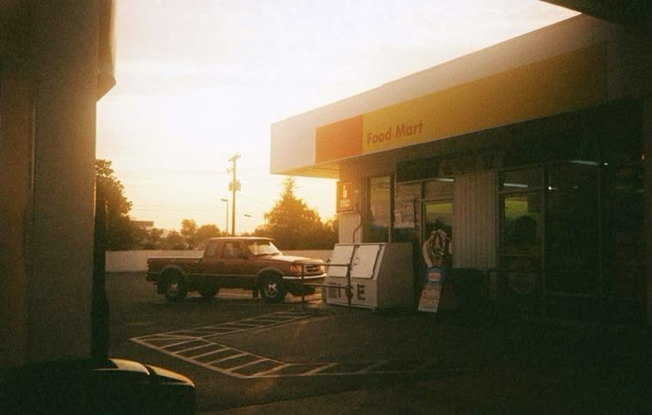
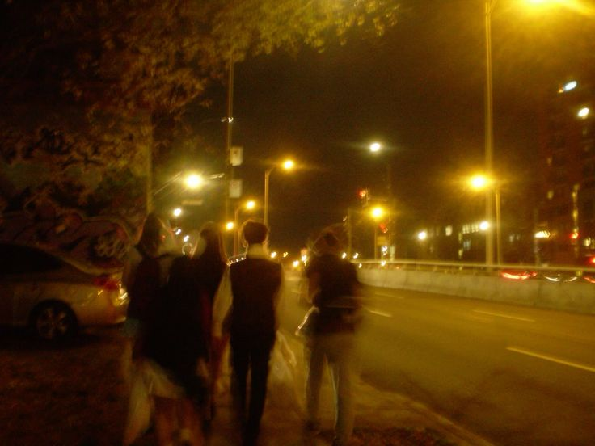
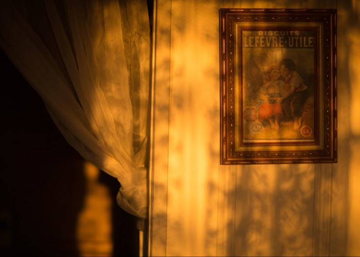

move out of your home town.
I’ve memorized these crooked streets,
each crack a whisper from my past.
But home feels smaller every week,
like I’ve outgrown it far too fast.
The windows echo childhood dreams,
now dim behind familiar glass.
I crave the hush of distant scenes,
a future not tied to this grass.
I love it here, but love can ache,
a longing stitched with gentle grief.
It’s time to go, to try, to make
a life that starts beyond belief.
But leaving means I’ll leave behind
the laughter soaked in midnight air,
the faces I might never find
in any other anywhere.
Still something calls beyond the hill,
a voice the silence can’t contain.
Not running from — but toward the thrill
of learning how to hold my name.
←back
next→